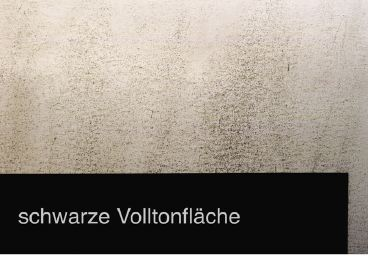
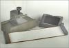
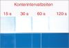
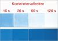
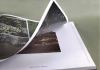
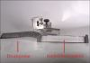

ABMEHLEN
|
Fehlerdefinition und Auswirkung:
Das Farbpigment lässt sich von der bedruckten
Papier- bzw. Kartonoberfläche abwischen,
obwohl die Druckfarbe durchgetrocknet ist. Die
Folge dessen ist eine unzureichende Wischfestigkeit
der Drucke oder Karbonieren (siehe Beispiele). In
beiden Fällen wirkt sich dies in
störendem Farbabrieb während der
Druckweiterverarbeitungsprozesse oder während
des Gebrauchs der Drucke aus (Abb. 1).
|

|
Abb. 1: Abmehlen von schwarzer Druckfarbe.
|
|
|
|
Mögliche Ursachen:
|
|
|
|
Abb. 2: Farbabrieb nach der
Druckweiterverarbeitung wegen schlechter
Wischfestigkeit des Drucks.
|
|
|
|

|
|
Abb. 3: Wischfestigkeitstest mit dem
FOGRA-WIKAT.
|
|
|
|

|
|
Abb. 4: Wegschlagtest des Auflagenpapiers.
|
|
|
|

|
|
Abb. 5: Wegschlagtest am Vergleichspapier.
|
|
|
|

|
|
Abb. 6: Abdruck des Pressbalkens nach dem
Dreiseitenbeschnitt.
|
|
|
|

|
|
Abb. 7: Ergebnis des Karboniertests am
Auflagendruck.
|
|
|
|
|
|
|
|
|
|

|
|
|
|
|
|
|
Ein zu schnelles Wegschlagverhalten von Papier oder Karton
führt dazu, dass das Bindemittel der Druckfarbe zu
schnell in das Papier eindringt; das Farbpigment bleibt in
der Folge ungebunden auf der Bedruckstoffoberfläche
zurück.
Dieser Effekt ist aufgrund der Kapillarwirkung der
Oberfläche bei gestrichenen Bedruckstoffen
häufiger zu beobachten als bei ungestrichenen Sorten.
Zu begründen ist dies damit, dass es bei gestrichenen
Sorten wegen der grobporigen Beschaffenheit des Papiers
weniger zur Kapillarwirkung und somit auch weniger zur
Trennung Bindemittel/Pigment kommt.
Ein zu schnelles Wegschlagverhalten der Druckfarbe und/oder
sehr niedrigviskose Druckfarben (z. B. nach dem Verschneiden
mit Mineralöl) haben den gleichen Effekt zur Folge und
können Abmehlen hervorrufen.
|
Mögliche Abhilfen:
|
|
Stellt man das Abmehlen der Druckfarbe erst fest, wenn die
Druckarbeit beendet ist, kann die Auflage nur durch eine
nachträgliche Lackierung (Dispersions- oder Drucklack)
gerettet werden.
Wird bereits vor dem Druck (z. B. am Probedruckgerät)
ein zu schnelles Wegschlagverhalten des einzusetzenden
Papiers festgestellt, kann, soweit es die
Oberflächenfestigkeit des Papiers zulässt, eine
strengere (hochviskosere) Druckfarbe verwendet werden.
Grundsätzlich ist es natürlich empfehlenswert, ein
Papier oder einen Karton bzw. eine Druckfarbe mit optimalem
Wegschlagverhalten einzusetzen.
Hat das eingesetzte Papier (Karton) oder die eingesetzte
Druckfarbe ein zu schnelles Wegschlagverhalten, ist es
ratsam, um eine weitere Viskositätsreduzierung des
Mineralöls und somit schnelleres Wegschlagen zu
vermeiden, auf die in den meisten Druckmaschinen integrierte
Infrarottrocknung zu verzichten.
|
Beispiel(e):
|
|
Unzureichende Wischfestigkeit beim Druck eines
Kataloges:
Die gesamte Auflage eines im Bogenoffset gedruckten
Kataloges konnte wegen starkem Farbabrieb nicht
weiterverarbeitet werden. Speziell am Sammelhefter, bei dem
immer der unterste Bogen im Stapel gezogen und auf die
Transportkette abgelegt wird, zeigte sich ein deutlicher
Farbabrieb (Abb. 2). Nachdem die gesamte Auflage bereits
gefalzt war, war ein nachträgliches Lackieren nicht
mehr möglich. Die Auflage musste demnach neu gedruckt
werden. Zur Ursachenfindung bzw. zur Vermeidung des Problems
im Neudruck wurde der FOGRA Mustermaterial zur Untersuchung
übersandt.
In einem ersten Test wurde die Wischfestigkeit der Drucke
mit dem FOGRA WIKAT geprüft. Bei der Prüfung der
Wischfestigkeit handelt es sich um eine einmalige
Wischbewegung über die bedruckte Oberfläche unter
definierten Bedingungen. Diese Prüfung eignet sich in
erster Linie dazu, um Verarbeitungsvorgänge der
Druckweiterverarbeitung, bei denen Druckfarbenabrieb durch
eine einmalige Belastungssituation entsteht, praxisnah zu
simulieren. Das Gerät wurde so konzipiert, dass die
Anpressdrucke den in buchbinderischen
Weiterverarbeitungsmaschinen auftretenden Belastungen
entsprechen.
Diese Prüfung ergab für die beanstandeten Drucke
ein sehr schlechte Wischfestigkeit, also hohen Farbabrieb
(Abb. 3).
Im nächsten Schritt wurde das Wegschlagverhalten des
unbedruckten Auflagenpapiers im Probedruckgerät
getestet. Dieser Test ergab für das eingesetzte
Auflagenpapier ein extrem schnelles Wegschlagverhalten (Abb.
4). Ein Papier in vergleichbarer Qualitätsstufe zeigte
demgegenüber wesentlich langsameres, also normal
schnelles Wegschlagverhalten (Abb. 5). Die Ursache der
schlechten Wischfestigkeit der Auflagendrucke wurde
insgesamt mit einem zu schnellen Wegschlagverhalten des
Papiers begründet.
Die Verarbeitung des Nachdrucks verlief unter Einsatz einer
anderen Papiersorte und einer darauf optimal abgestimmten
Druckfarbe ohne Probleme.
Karbonieren beim Druck eines Bildbandes:
Ein im Bogenoffset produzierter Bildband wurde vom Endkunden
beanstandet, da sich bei einigen Seiten immer am
äußersten Rand Farbabriebspuren zeigten. Nach
Durchsicht der bereits ausgelieferten Exemplare zeigte sich,
dass der Farbabrieb immer an unbedruckten Stellen auftrat,
denen im geschlossenen Buch eine vollflächig bedruckte
Seite gegenübersteht (Abb. 6). Aus dem Erscheinungsbild
wurde deutlich, dass es sich dabei um Farbabrieb unter
Druckbelastung, wie es z. B. beim Anpressdruck des
Pressbalkens beim Dreiseitenbeschnitt vorkommt, handelte.
Ein Karboniertest bestätigte diese Vermutung. Beim
Karbonieren handelt es sich um Farbabrieb unter
Druckbelastung, also ohne Bewegung, wenn sich eine bedruckte
und eine unbedruckte Fläche dabei gegenüberstehen.
Der Karboniertest wurde mit dem FOGRA-WIKAT
durchgeführt und zeigte für den Auflagendruck ein
schlechtes Karbonierergebnis (Abb. 7).
Da keine unbedruckten Papiermuster des Auflagenpapiers
für weitere Untersuchungen zur Verfügung gestellt
werden konnten, war eine Angabe über die genaue Ursache
des schlechten Karbonierverhaltens nicht mehr möglich.
Vor dem Neudruck des Bildbandes wurde im Labor eine optimal
verträgliche Druckfarbe/Papier-Kombination ausgetestet;
die anschließende Druckweiterverarbeitung erfolgte
problemlos.
|
Allgemeine Hinweise:
|
|
Für den Reklamationsfall:
Druckausfallmuster sicherstellen.
Unbedruckte Papier- bzw. Kartonmuster und unbedruckte
Vergleichsmuster sicherstellen (ca. 20 Blatt DIN A4). An
diesen Mustern können im Labor vergleichende
Wegschlagtests, Wischfestigkeitstests und Karboniertests
vorgenommen werden.
Druckfarbenproben (aus dem Farbkasten) und evtl.
Vergleichsfarben sicherstellen.
Produktionsdaten protokollieren.
Ergänzende Literatur:
SCARLETT, T.:
Fehlersuche bei Druckschwierigkeiten.
In: Graphic Arts Monthly (Gram), Jg. 58, 1986 Nr. 4 (S. 72),
engl.
PFEIFFER, B.:
Druckschwierigkeiten mit Offsetfarben (Teil 1).
In: Offsetpraxis Druckmagazin, Jg. 38, Nr. 7/8, 1996, (S.
56-58)
PANTEL, G.:
FOGRA Gutachten: Schnellschüsse.
In: Druckwelt, Nr. 9, 1996, (S.65)
|
|
|
|
|
|
|
Kontakt:
pantel@fogra.org
|
Abm-pan-200111
|